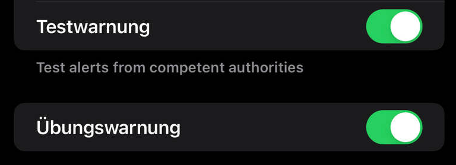

Hi
 unter IOS 17.4 unter Mitteilungen ganz unten findet man die Einstellungen hat sicher was mit Cell Broadcast zu tun
😉
unter IOS 17.4 unter Mitteilungen ganz unten findet man die Einstellungen hat sicher was mit Cell Broadcast zu tun
😉
LG 😀
Bearbeitet von kilian3845Wie ist der Status zum Thema Cell Broadcast im Magenta Netz?
Ist es/wird es umgesetzt?
Kurzfassung:
Cell Broadcast ist eine Funktion im GSM Standard um über das Mobilfunk über Broadcast an alle verbundenen Geräte gleichzeitig eine Nachricht zu senden. Dabei ist es technisch gesehen ein Broadcast, sprich es muss nicht wie bei SMS an jeden einzeln verschickt werden sondern kann gesammelt an alle gesendet werden. => viel geringere Netzlast im Vergleich zu klassischen SMS oder IP/APPs
Hey es ist zwar etwas spät aber es gibt neue Informationen.
Hier in dem Blog:
https://blog.magenta.at/internet/sicherheit/cell-broadcast/
LG
Am 20.7.2021 um 19:48 schrieb IT-Freak:Wie ist der Status zum Thema Cell Broadcast im Magenta Netz?
Ist es/wird es umgesetzt?
Kurzfassung:
Cell Broadcast ist eine Funktion im GSM Standard um über das Mobilfunk über Broadcast an alle verbundenen Geräte gleichzeitig eine Nachricht zu senden. Dabei ist es technisch gesehen ein Broadcast, sprich es muss nicht wie bei SMS an jeden einzeln verschickt werden sondern kann gesammelt an alle gesendet werden. => viel geringere Netzlast im Vergleich zu klassischen SMS oder IP/APPs
Am 20.7.2021 um 19:48 schrieb IT-Freak:Wie ist der Status zum Thema Cell Broadcast im Magenta Netz?
Ist es/wird es umgesetzt?
Kurzfassung:
Cell Broadcast ist eine Funktion im GSM Standard um über das Mobilfunk über Broadcast an alle verbundenen Geräte gleichzeitig eine Nachricht zu senden. Dabei ist es technisch gesehen ein Broadcast, sprich es muss nicht wie bei SMS an jeden einzeln verschickt werden sondern kann gesammelt an alle gesendet werden. => viel geringere Netzlast im Vergleich zu klassischen SMS oder IP/APPs
Hallo ich habe diese Antwort bekommen vom Katwarn-Team:
Ich dachte ich gebe mal bescheid weil es doch schon sehr lang dauert.
Der Start des Betriebes ist aus heutiger Sicht im Rahmen des nächsten Jahres geplant. Die Erstellung des Konzeptes für das Gesamtsystem, die Schaffung der technischen Schnittstellen und die Vernetzung der Behörden mit den Mobilfunkbetreibern ist sehr komplex und hat eine zeitintensive Abstimmung zwischen den neun Bundesländern, dem BMI, dem BMLRT (nunmehr BMF), der RTR und den drei Mobilfunkbetreibern erfordert, an der seit Erlassung der EU-Richtlinie 2018/1972 intensiv gearbeitet wurde.
Die rechtlichen Rahmenbedingungen für die Einführung von Cell Broadcast wurden mittlerweile geschaffen. Derzeit findet noch die technische Implementierung statt. Hier muss unter anderem auch neue Infrastruktur in den Warnzentralen und bei den Mobilfunkbetreibern angeschafft werden. Laut unserem Wissensstand ist mit einem Ausrollen nicht vor Mitte 2024 zu rechnen.
Mein aktuellstes Wissen dazu:
Ursprünglich war geplant, Cell Broadcast in Österreich im Frühjahr 2023 einzuführen. Aufgrund von Verzögerungen bei der Umsetzung ist die Einführung nun auf das Jahr 2024 verschoben worden. Ein konkretes Datum ist noch nicht bekannt, aber es wird erwartet, dass das System im Laufe des Jahres 2024 in Betrieb genommen wird.
Die Bundesregierung hat im März 2023 eine Verordnung erlassen, die die technische Ausgestaltung des öffentlichen Warnsystems regelt. Die Mobilfunkbetreiber haben nun die Aufgabe, die technischen Voraussetzungen für Cell Broadcast zu schaffen. Dazu gehören unter anderem die Anpassung der Mobilfunknetze und die Bereitstellung von Software für die Endgeräte.
Die Einführung von Cell Broadcast ist ein wichtiger Schritt zur Verbesserung des Katastrophenschutzes in Österreich. Das System ermöglicht es, Warnmeldungen an alle Mobiltelefone in einem bestimmten Gebiet gleichzeitig zu senden. Dadurch können die Menschen schneller und effektiver vor Gefahren gewarnt werden.
LG JD.
Hi
 unter IOS 17.4 unter Mitteilungen ganz unten findet man die Einstellungen hat sicher was mit Cell Broadcast zu tun
😉
unter IOS 17.4 unter Mitteilungen ganz unten findet man die Einstellungen hat sicher was mit Cell Broadcast zu tun
😉
LG 😀
Bearbeitet von kilian3845Was ist der Unterschied zwischen:

LG JD.
Am 6.3.2024 um 15:02 schrieb Jonathan Dorian:
Das ist eine sehr gute Frage XD kann ich dir leider nicht beantworten:)
Am 6.3.2024 um 15:02 schrieb Jonathan Dorian:
Übung wird Wahrscheinlich beim Zivilschutz Probealarm sein
Test wird wahrscheinlich von Anbietern etc gesendet
Es gibt neue Infos!
https://blog.magenta.at/internet/sicherheit/cell-broadcast/
https://www.derstandard.at/story/3000000235381/katastrophenalarm-at-alert-auf-handys-wird-ab-9-september-getestet
LG

{kind=link}
{kind=link}